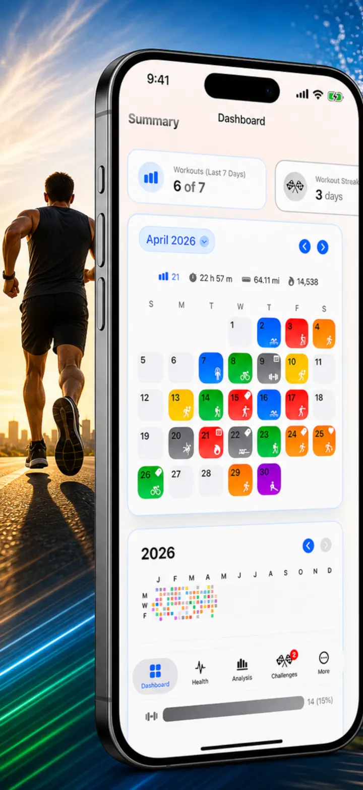
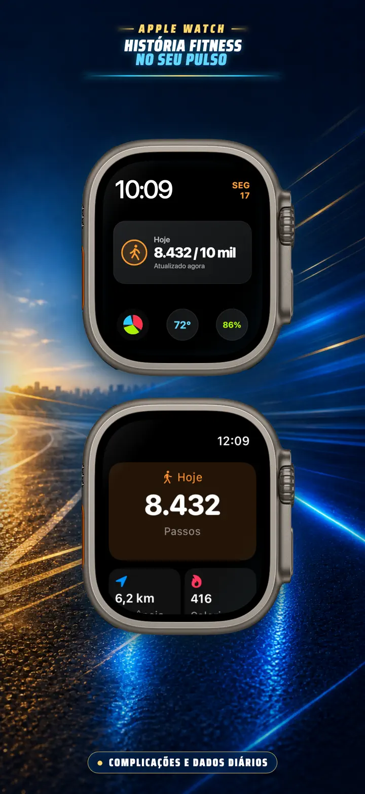
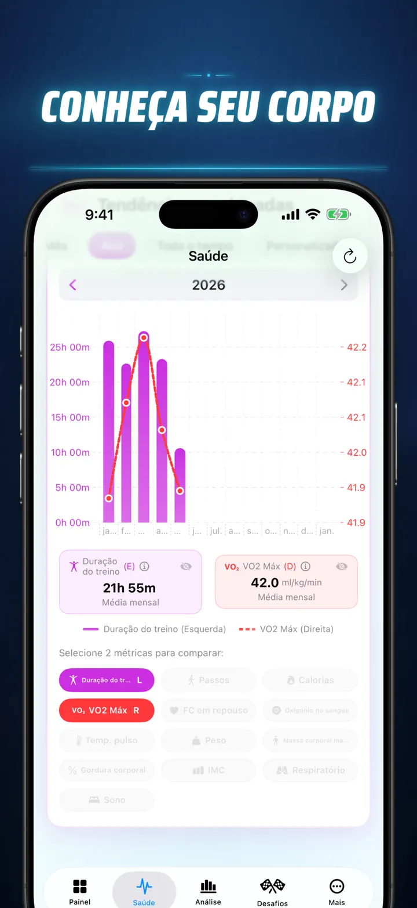
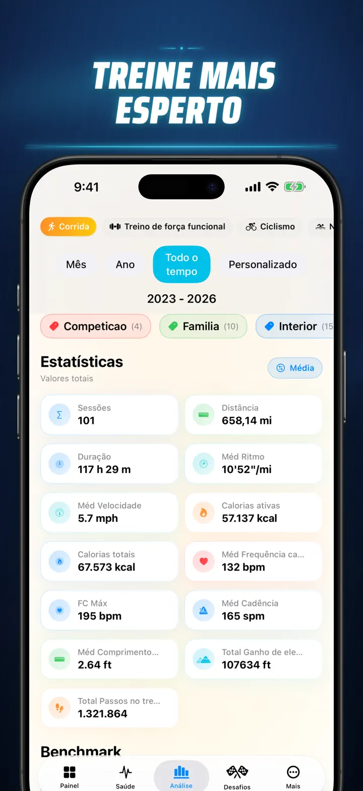
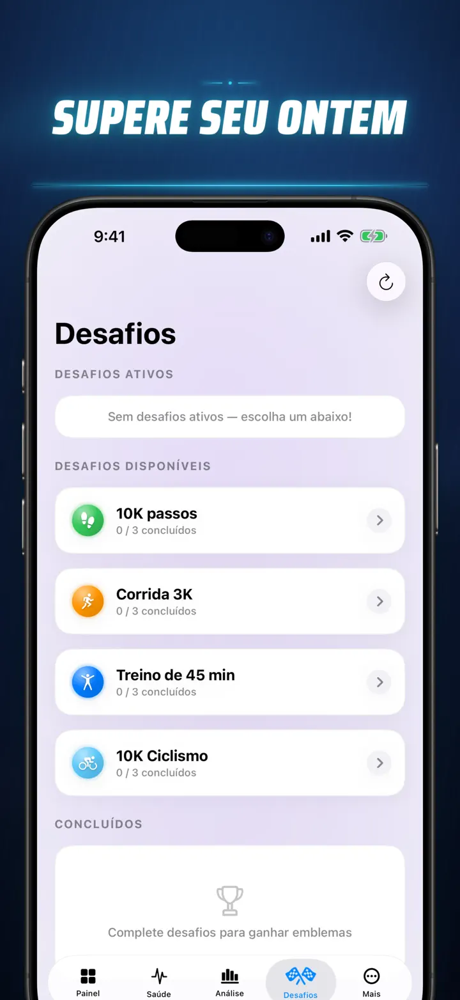
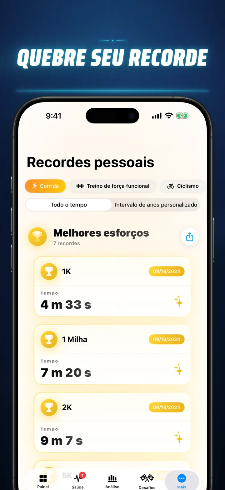
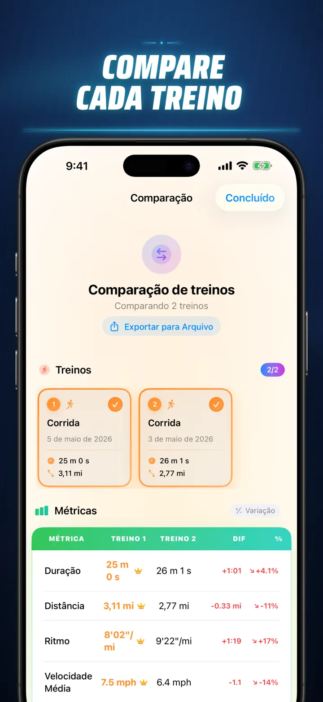
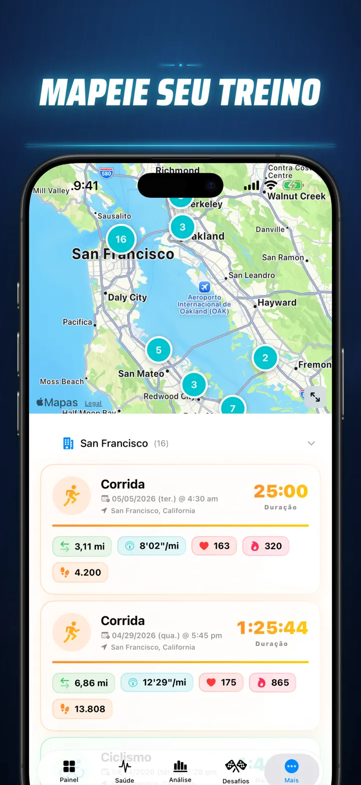
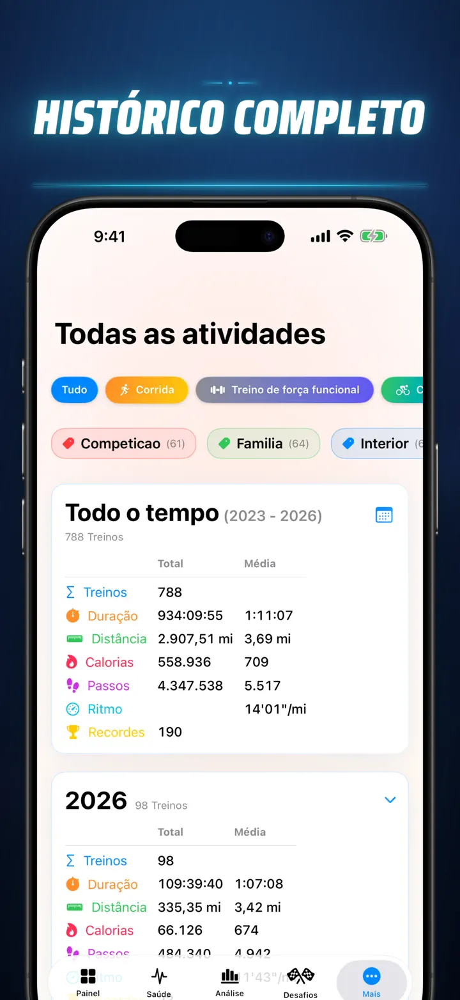

História Fitness
Descubra seus dados de fitness
Agora no Apple Watch: seus passos de hoje em qualquer mostrador, e uma tela Hoje com distância, calorias e andares — direto do Apple Saúde.
Baixar na App Store
Sobre o app
Chega de adivinhar. Comece a saber de verdade. História Fitness transforma seus dados do Apple Saúde na análise mais poderosa e detalhada disponível no iOS. Sem contas. Sem servidores. Apenas toda a sua jornada fitness, visualizada.
Seja para monitorar estágios do sono, analisar a cadência de corrida ou buscar um recorde na maratona, este é o painel completo que o seu esforço merece.
Funciona com qualquer dispositivo ou app que sincronize com o Apple Saúde — Apple Watch, Garmin, Polar, Suunto, Zwift e muito mais.
ANÁLISE DE NÍVEL PROFISSIONAL
- Gráficos de Tendência e Benchmark: Use diagramas Box-and-Whisker para visualizar mediana, quartis e valores atípicos para cada tipo de esporte.
- Análise Detalhada: Filtre seu histórico por horário do dia, faixas de distância, duração, ritmo, elevação, cadência e comprimento da passada.
- Classifique Tudo: Um único toque classifica as métricas do dia (distância, ritmo, FC, etc.) em relação a todo o seu histórico. Saiba na hora se atingiu um desempenho "Top 15%".
- Gráfico de Contribuições: Um heatmap estilo GitHub de todo o seu histórico de treinos. Vire-o para ver estatísticas diárias detalhadas.
DETALHES DO TREINO REINVENTADOS
- Mapas Inteligentes: Pinte suas rotas ao ar livre por velocidade, elevação ou zonas de frequência cardíaca. (Inclui correção de mapa da China).
- Análise de Splits Profunda: Veja splits por KM ou milha com ritmo, elevação, FC e cadência para cada volta.
- Zonas de Frequência Cardíaca: Visualize o tempo gasto nas Zonas personalizadas 1–5 baseadas na sua idade e frequência cardíaca de repouso.
- Contexto Rico: Adicione fotos, notas em rich text, avaliações de esforço (1–10) e tags personalizadas a cada treino.
CENTRAL DE COMANDO DA SAÚDE COMPLETA
- Tudo o que seu Apple Watch mede, visualizado em um só lugar com tendências diárias, semanais e anuais:
- Saúde Cardiovascular: Frequência cardíaca de repouso, VO2 Máx (ajustado por idade), oxigênio no sangue e frequência respiratória.
- Composição Corporal: Peso, % de gordura corporal, massa magra e IMC com indicadores de tendência.
- Atividade e Recuperação: Passos (com detalhamento por hora), calorias ativas vs. basais e variações de temperatura do pulso.
- Monitoramento Avançado do Sono: Estágios profundo, core, REM e acordado visualizados noite a noite.
- Sobreposições de Correlação: Sobreponha múltiplas métricas de saúde para ver como o sono afeta a frequência cardíaca ou como o peso impacta o VO2 Máx.
COMPARE E COMPITA
- Comparação de Treinos: Selecione até 10 treinos para comparar lado a lado. Veja variações percentuais (ex.: "+1,5% mais rápido") para cada métrica, por split!
- Exportação de Comparação: Quer analisar com outras ferramentas? Exporte a comparação dos seus treinos!
- Recordes Pessoais: Acompanhamento automático para 1K, 5K, 10K, meia maratona, maratona e distâncias personalizadas. Conquiste troféus de ouro, prata e bronze.
- Timeline da História: Um feed cronológico de cada marco, recorde e treino que você completou.
SEUS DADOS, EM QUALQUER LUGAR
- Mapa Global: Veja todos os lugares onde você treinou em um mapa mundial interativo agrupado.
- Exportação Poderosa: Exporte todo o seu histórico (ou intervalos personalizados) para CSV ou JSON. Inclui dados completos de splits, métricas corporais e metadados.
- Sincronização iCloud: Favoritos, tags, notas e avaliações sincronizam instantaneamente em todos os seus dispositivos.
- Privacidade em Primeiro Lugar: Sem servidores ocultos. Seus dados ficam no seu dispositivo e no seu iCloud privado.
- Seu suor conta uma história. Está na hora de ler. Baixe o História Fitness hoje.
Baixe o História Fitness e descubra cada detalhe!
Privacy Policy: https://masawata.net/privacy-policy.html Terms Of Service: https://www.apple.com/legal/internet-services/itunes/dev/stdeula/
Capturas de tela








História Fitness
Agora no Apple Watch: seus passos de hoje em qualquer mostrador, e uma tela Hoje com distância, calorias e andares — direto do Apple Saúde.
Baixar na App Store